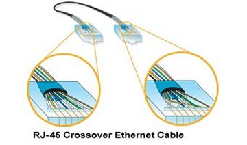

NETWORKING
FTP
CLIENT SETTINGS
Turn off any FIREWALL you have installed to Windows or WindowsXP
Firewall.
Direct PC >< XBOX
With Xover Cable
With Router, With built in or external HUB or SWITCH
Can use RemoteX Boot Disc, or EvolutionX Already Installed - booted
from HDD.
You; Make your boot disc with
STATIC or DHCP setting by editing the "evox.ini" file whic is explained
in connection types.
>< Is a Crossover Cable
= Is
a regular straight through network cable
Turn off any FIREWALL
you have installed to Windows or WindowsXP Firewall.
Used: EvolutionX Build 3935 - First
you will require to get EvolutionX, as we cannot host it on the
website, we will tell you the secret where you can find it, if you
don't have it already. The Place is #xbins on Efnet. If that
doesn't ring a bell to you, you can read a guide about getting onto
Xbins here.
If booted with the RemoteX disc, check the I.P. address it's
using. You must use THAT I.P. address, then you can FTP the files
for EvoX or other dashboard to the Xbox. I used RemoteX, and a
router, so it was VERY simple. RemoteX is setup for DHCP for use behind
a router.
If you downloaded an ISO already made, there should have been TWO
versions, a *DHCP and *STATIC version. Pic the one that suits you
best. Which evver version you used, and copied to the HDD that is
what boots MOD ON from the HDD.
You can always EDIT & SAVE the settings in EvoX when booted from
the HDD. It's funny, but people have made changes, and
saved while booted from a DVD. Well, you should know, you can't,
those changed will not get written, because you're booted from the DVD
ROM. Even if the DVD drive was a writer? It would not
be supported!
XBOX TO PC - DIRECT:
XBOX >< PC
EDIT the settings in EvolutionX SETTINGS menu for
NETWORK, make your Boot Disc, and Boot it MOD ON.
Can use the settings when on the HDD too.
Look for this [These
Are The DEFAULT SETTINGS]:
SetupNetwork
= Yes
StaticIP
= Yes
Ip
= 192.168.100.10
Subnetmask
= 255.255.255.0
Defaultgateway =
192.168.100.1
DNS1
= 0.0.0.0
DNS2
= 0.0.0.0
SetupDelay
= 0
SkipIfNoLink
= No
Make it look like this:
SetupNetwork = Yes
StaticIP
= Yes
Ip
= 192.168.0.2
Subnetmask
= 255.255.255.0
Defaultgateway = 192.168.0.1
DNS1
= 0.0.0.0
DNS2
= 0.0.0.0
SetupDelay
= 0
SkipIfNoLink
= No
Alright, so now with your FTP program, you use 192.168.0.2 as address,
and xbox
as username and password. Then connect to the xbox using it. You
should see a list of drives on your RIGHT side, those are the Xbox
Partitions. Left side is the LOCAL hard disk, you can set that up
to go where you want.
BEFORE you begin any EXfering of files to the Xbox, BACKUP the
contents of C: and F: to your LOCAL hard disk, burn to a CDR for safe
keeping. This is so you have all the original settings BEFORE you
started playing around.
WITH A ROUTER W/SWITCH or HUB BUILT IN:
PC = ROUTER =
XBOX
//
WAN (Cable/DSL Model)
WITH ROUTER & SEPERATE SWITCH/HUB
XBOX = HUB/SW = ROUTER
//
//
PC
WAN (Cable/Dsl Modem)
EVOX.INI Change:
StaticIP
= Yes
-to-
StaticIP
= No
Save & Exit >
Make your boot disc with these settings, and boot MOD ON. This
can also be used on the HDD as well. Check your IP address in
EVOX by going to SETTINGS > NETWORK and look at the IP address
assigned by the router.
Some routers can be set up to perminently assign the same address to a
device by its MAC address. Set this up in your router so the same
IP address is always assigned to Xbox when booted.
CROSSOVER CABLE:

Looks
like the standard Ethernet cable, except special. What's special is
that inside it, some wires are crossed over. Make sure you don't use a
standard Ethernet cable when you instead need a crossover. The Xbox
System Link cable is an Ethernet crossover cable. Other crossover
cables work too, but they don't say "Xbox" on them.
FTP CLIENT SETTINGS:
Host Name/Address: Use the IP
Address EvoX Shows in Settings > Network
Port = 21
Host Type: Unix Standard
UserID: xbox
Password: xbox
If there are options to login Anonymous or Save Password, choose SAVE
PASSWORD.
Startup Remote Folder: I have
F:\ but it just shows the list of drives.
Initital Local Folder: A
place on your PC where you're going to mirror your Xbox drives -
I have G:\MyXbox